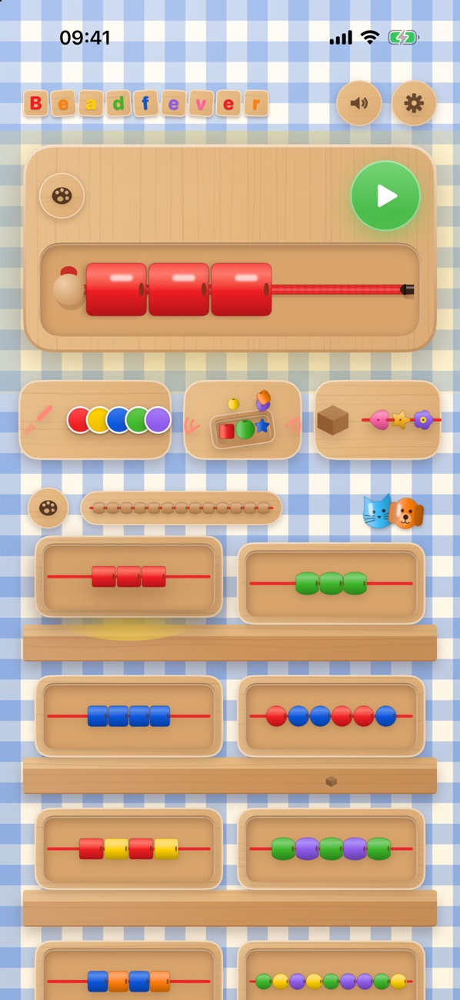
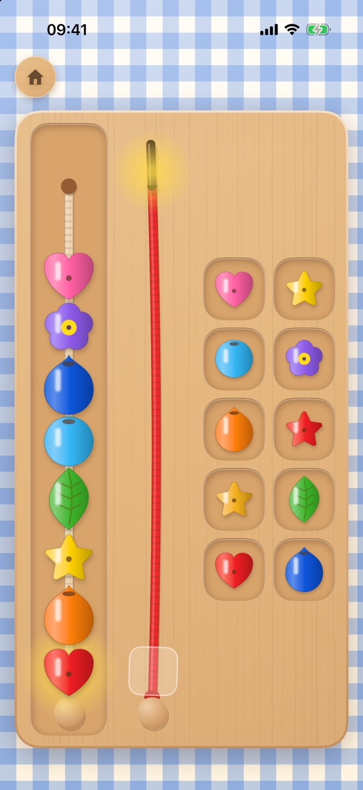
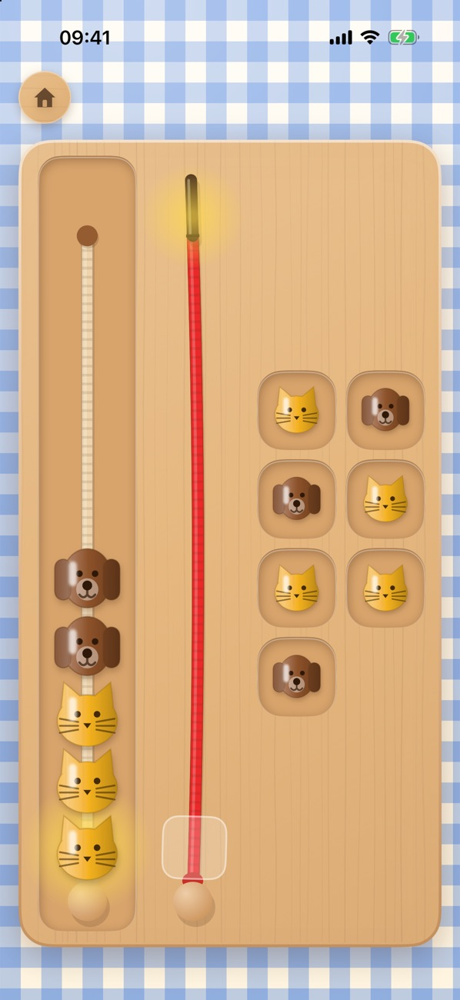
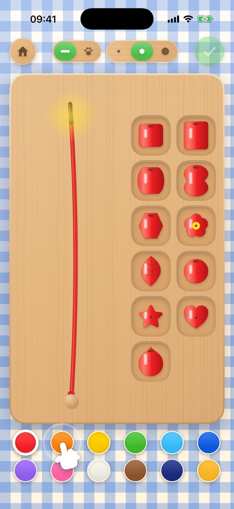
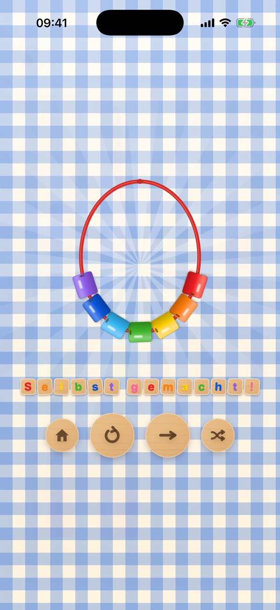

Echte Materialien
Bemalte Holzperlen, eine rote geflochtene Schnur mit fester Spitze, ein Holzstopper. Farbe trägt Bedeutung; nichts ist nur Dekoration.
Montessori-Perlen auffädeln für kleine Hände
Nimm eine Holzperle, führe sie zur Spitze der Schnur und sieh zu, wie sie hinuntergleitet. Lege die Vorlage Perle für Perle nach und mach deine eigene Kette.
Bald im App Store
Beadfever ist von den Holz-Fädelperlen inspiriert, die es in jedem Montessori-Raum gibt. Ein einziges Holztablett enthält alles: links die Vorlage, in der Mitte die Schnur des Kindes, rechts die Perlenschale. Jede Perle liegt genau neben ihrem Gegenstück in der Vorlage – Nachlegen fühlt sich ganz natürlich an.
Es gibt keine Punkte, Sterne oder Zeitlimits. Eine falsche Perle geht einfach zurück in die Schale, und die richtige in der Vorlage leuchtet kurz auf. Ist die Schnur voll, sieht das Kind seine selbst gemachte Kette. Das ist die Belohnung.





Bemalte Holzperlen, eine rote geflochtene Schnur mit fester Spitze, ein Holzstopper. Farbe trägt Bedeutung; nichts ist nur Dekoration.
Das Material zeigt den Fehler selbst: Die Perle kehrt zurück, die Vorlage leuchtet. Das Kind bemerkt und korrigiert, ohne getadelt zu werden.
Keine Sterne, Punkte oder Serien. Am Ende steht die selbst gemachte Kette; wiederholen oder weitergehen entscheidet das Kind.
Die Arbeiten warten auf offenen Holzregalen von leicht bis schwer. Noch nicht vorgestellte Arbeiten zeigen unbemalte Holzperlen.
Jeder Schritt isoliert eine Schwierigkeit und verbindet sie dann.
Freies Spiel: Farbe wählen, jede Form oder jedes Tier nehmen und eine eigene Kette fädeln. Tippe auf die letzte Perle, um sie abzunehmen.
Jede fertige Arbeit und jede Werkstattkette wird hier aufbewahrt: die eigene Sammlung des Kindes.
„Würfel, rot; Fass, gelb …“ – die Folge wird in der Sprache des Kindes vorgelesen.
Flache, bemalte Holzfiguren – Fisch, Vogel, Schildkröte und Bär – im Regal und in der Werkstatt.
Etwa von 2 bis 6. Für die Kleinsten in den Elterneinstellungen „Leicht“ wählen: größeres Ziel und stärkerer Magnet an der Schnurspitze.
Nein. Alles, auch das Vorlesen der Folgen, funktioniert offline.
Die Montessori-Pädagogik verzichtet auf äußere Belohnungen, damit die Freude an der Arbeit selbst das Kind antreibt. Die selbst gemachte Kette ist die Belohnung.
Tippen Sie im Regal auf das Zahnrad und beantworten Sie die Rechenaufgabe.
iPhone und iPad ab iOS 18, auf dem iPad in jeder Ausrichtung. Englisch, Türkisch, Deutsch, Spanisch und Französisch.
Ja: Elternbereich → Daten → Fortschritt zurücksetzen. Dort lässt sich auch die Schatzkiste leeren.
Fragen, Ideen oder eine Perle, die sich Ihr Kind wünscht? Schreiben Sie an selahattincincin@gmail.com.